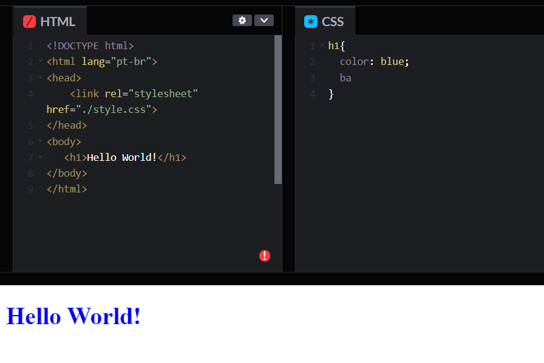
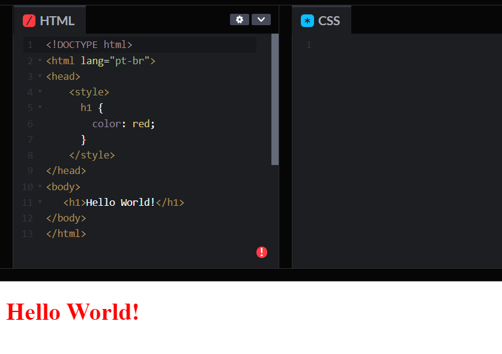
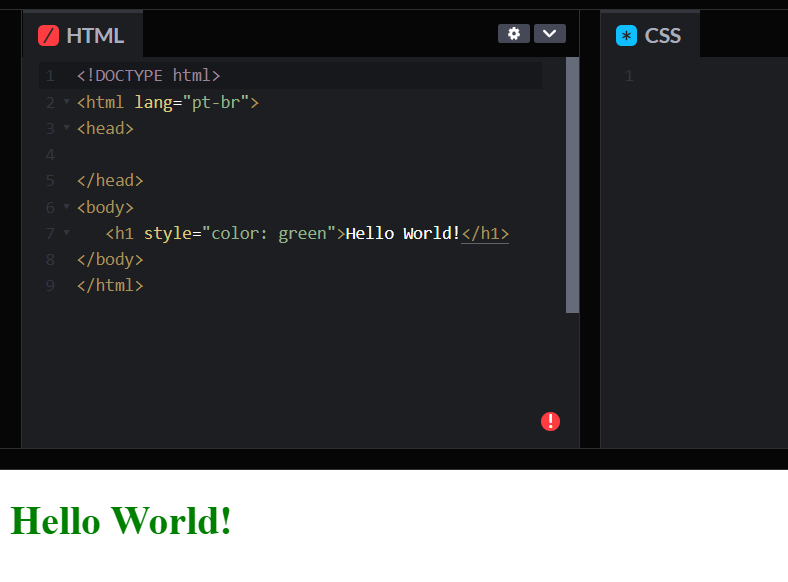

Uma folha de estilos externa é quando você tem seu CSS escrito em um arquivo separado com uma extensão .css, e você o refere dentro de um elemento <link> do HTML
Uma folha de estilos interna é usada quando você não tem um arquivo CSS externo, mas, ao contrário, coloca seu CSS dentro de elemento <style> localizado no <head> do documento HTML.
Estilos inline são declarações CSS que afetam apenas um determinado elemento, inserido em um atributo style:
O seletor de classes CSS corresponde aos elementos com base no conteúdo de seus atributos class.
<tag class="classe_nome classe_cor">Exemplo<tag>
.classe_nome{
propriedades de estilo;
}
<tag id="id">Exemplo<tag>
#id{
propriedades de estilo;
}